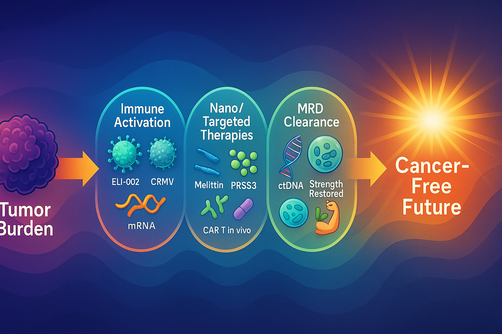

🌍 Framtida projekt – BAUTA #Africa
Nuvarande fokus är att expandera BAUTA-projekten i Afrika – med gratis sjukhus, gratis medecin/medicinfabriker, mikrolåns-banker och förnybar energi.
Motto: “Free of charge – for Africa.”

Bank of Microloans
Finansierar privat personer, småföretagare och lokala entreprenörer.

Vision Framtid – Cancer Cure
En komplett forskningsstrategi för att eliminera cancer med immunaktivering, nanoterapi och MRD-rensning.

BAUTA 1000 Drilling Rigs
1000 borriggar – målet: en brunn i varje by.

BAUTA Water Wells Drilling
Dygnet-runt-borrning för fria vattenkällor i Afrika. Drill baby Drill!

BAUTA Vision
Framtidens fria sjukvård & medecin och infrastruktur.